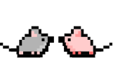

Autorką gry jest Aleksandra Wierzbiak. Gra została stworzona w ramach projektu dyplomowego, realizowanego na studiach Elektroniczne Przetwarzanie Informacji na Uniwersytecie Jagiellońskim.
Stanowi integralną część pracy licencjackiej przygotowanej pod kierunkiem prof. dr. hab. Jerzego Koniora.
 Powrót do gry